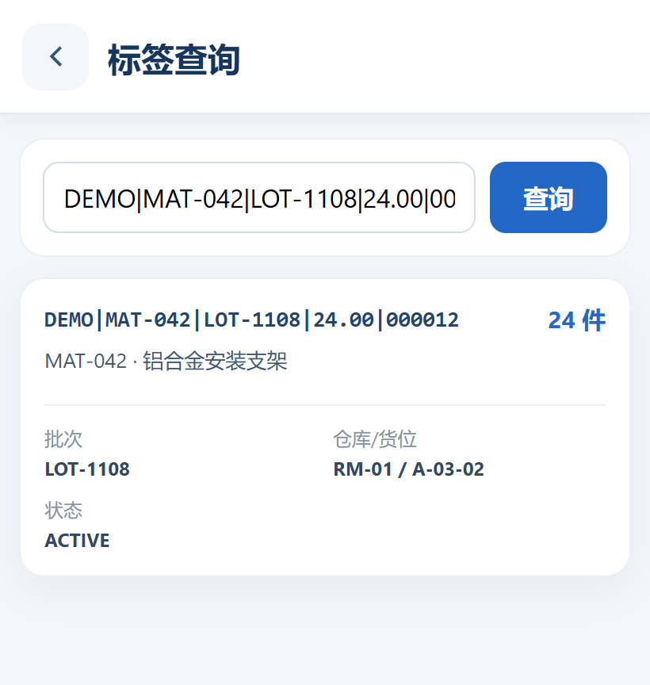
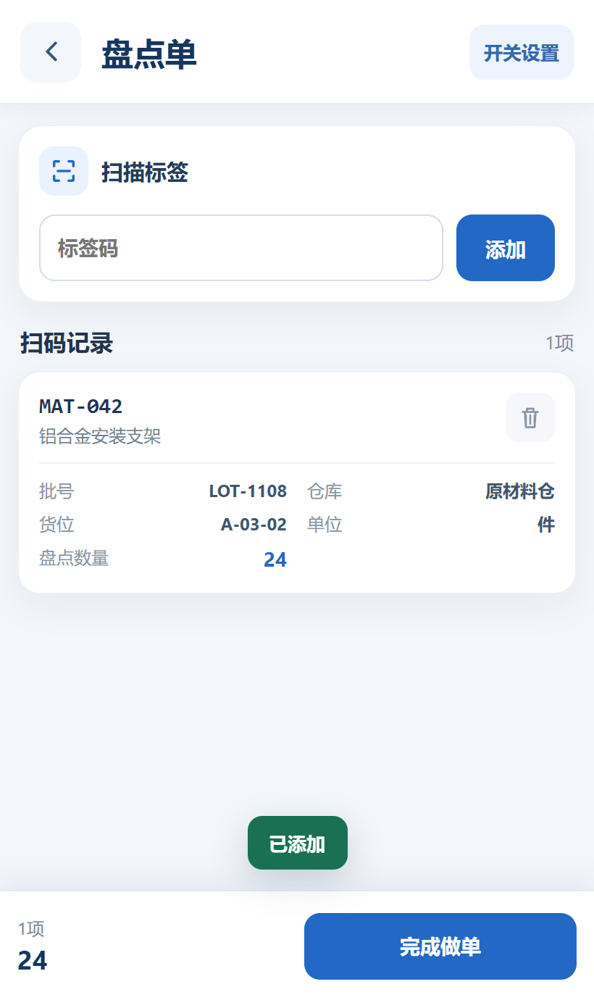
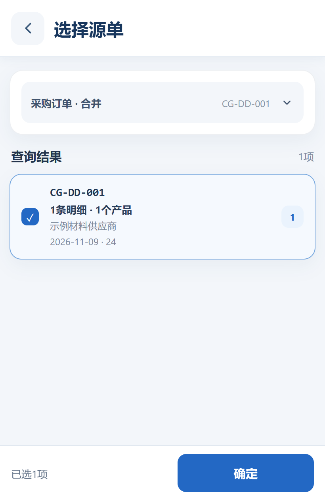
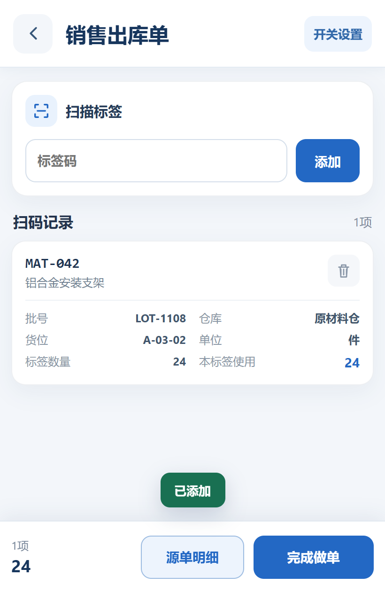
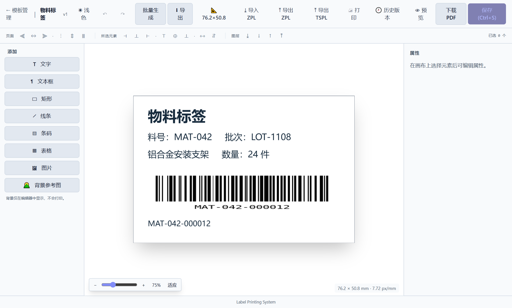
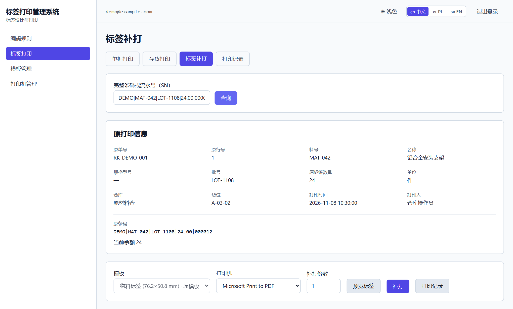
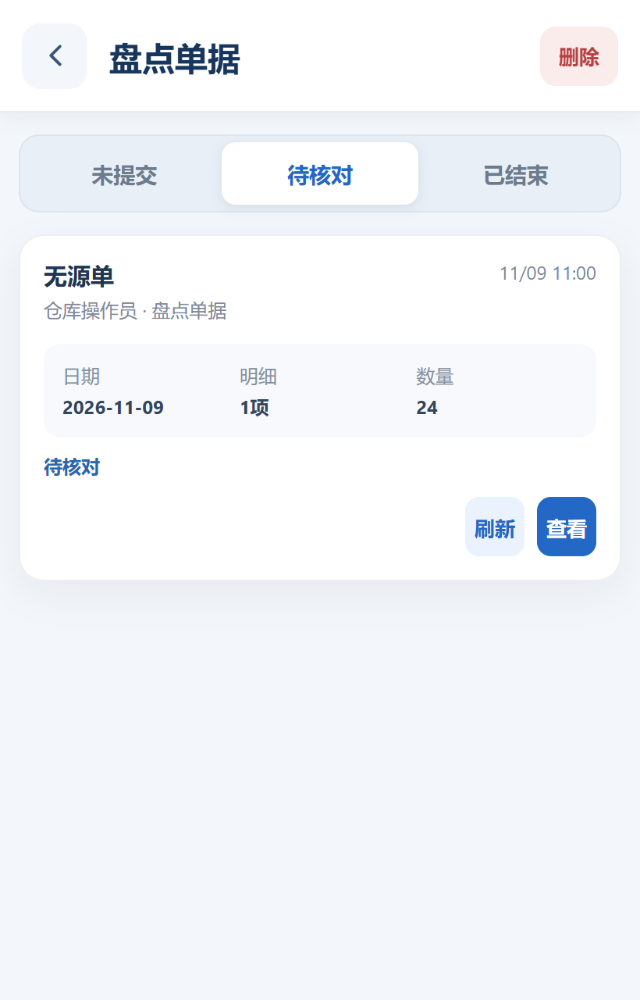
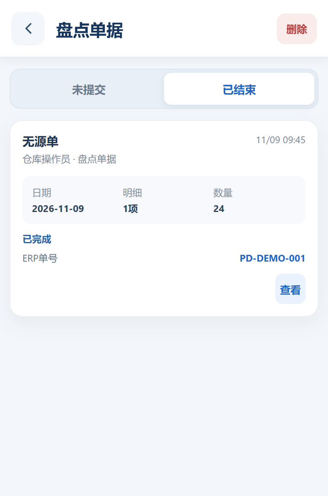

现场记一遍，回电脑再录一遍Recorded on the floor. Retyped at the desk.
现场采集明细，减少事后补录Capture the lines on site to reduce later re-keying
用友 U8 制造企业 · 现场作业解决方案WAREHOUSE OPERATIONS FOR MANUFACTURERS USING YONYOU U8
现场扫码采集，标签取数打印，让仓库作业与 U8 单据衔接。Capture warehouse work by scanning and print labels from business data. Connect both to your U8 documents.


01客户痛点THE EVERYDAY CHALLENGES
现场采集明细，减少事后补录Capture the lines on site to reduce later re-keying
当前余量与位置，扫码可查Scan to check the current balance and location
从业务数据取数，统一模板打印Use business data and shared print templates
按单据查结果，异常保留记录Check results by document, with exceptions kept for review
02整体方案THE CONNECTED SOLUTION
基础档案 · 来源单据 · 业务单据与审核Master data · Source documents · Transactions and approvals
从采购入库明细或现有库存取数，套用标签模板。Populate label templates from purchase receipt lines or existing stock.
采集标签与数量，按开通的流程提交 U8。Capture labels and quantities for submission through enabled U8 workflows.
业务提交和审核遵循企业的 U8 规则与人员权限。Submission and approval follow your U8 business rules and user permissions.
03产品价值WHAT IT MEANS FOR YOU
仓库人员WAREHOUSE TEAMS
在手持端查货、采集明细，把时间留给现场作业。Look up stock and capture details on a handheld, leaving more time for warehouse work.
仓库与业务主管OPERATIONS MANAGERS
凭单号和状态跟进进度，凭原记录处理异常。Track progress by document number and status; follow up exceptions from the original record.
信息化负责人IT LEADS
复用 U8 档案、来源单据与操作员身份，按权限开展业务。Reuse U8 master data, source documents, and operator identities, with access governed by permissions.
04仓库扫码系统WAREHOUSE SCANNING
扫码查看料号、批次、当前余量与货位。Scan to view the item, lot, current balance, and bin.
同一盘点单内拦截重复标签，实盘数量逐码留存。Block duplicate labels within a count and retain the counted quantity for each label.
保存已采集明细，继续处理时无需重新整理。Save captured details so work can resume without rebuilding the record.

05业务场景YOUR DAILY WORKFLOWS
05.1采购与委外Purchasing & subcontracting
手持端查询采购、委外订单明细，支持到货核对与单据准备。Look up purchase and subcontract order lines on a handheld for arrival checks and document preparation.

05.2生产领退料Production materials
采集领退料标签与数量，关联适用来源单据。Capture labels and quantities for material issues and returns, linked to applicable source documents.
05.3库存移动Stock movements
记录来源、目标位置和移动数量，支持适用的部分数量移动。Record the source, destination, and quantity, with partial moves supported in applicable workflows.
05.4销售作业Sales operations
关联发货单，复核剩余可出量、标签与单据明细。Link the delivery note and check the remaining quantity, labels, and document lines.

06条码打印系统BARCODE LABEL PRINTING

统一标签标准CONSISTENT LABEL STANDARDS
按标签尺寸编排料号、批次、数量与条码，保存为可复用模板。Arrange item, lot, quantity, and barcode fields to fit your label, then save a reusable template.
从采购入库明细或现有库存取数，减少错填与漏填。Use purchase receipt lines or existing stock to reduce entry errors and omissions.
保留原条码与内容，无需重建资料，不改变库存数量。Keep the original barcode and content without recreating the details or changing stock quantities.

查询待打印标签、任务打印机与处理状态，方便交接和异常跟进。Check pending labels, assigned printers, and job status for handovers and exception follow-up.
07作业与管理OPERATIONAL CONTROL
保留待核对单据及明细，先查结果，减少盲目重做。Retain unconfirmed documents and details so results can be checked before repeating work.

查看 U8 返回单号与当前状态，交接时直接对单。Check the returned U8 number and current status for document-based handovers.

分类查询待审、已审单据，由授权人员按 U8 规则审核。Find pending and approved documents by type; authorized users approve under U8 rules.

08部署与适配DEPLOYMENT & FIT
按 U8 版本、流程和权限确认对接范围。Confirm integration scope against your U8 version, workflows, and permissions.
验证现有条码、手持终端与打印配置，评估可沿用设备。Check existing barcodes, handhelds, and print settings to identify reusable equipment.
先试点高频业务，再按效果确定推广范围。Pilot a frequent workflow, then use the results to set the rollout scope.
仓库扫码 × 条码打印WAREHOUSE SCANNING × LABEL PRINTING
适用范围按企业 U8 配置与权限确认。Confirm applicable capabilities against your U8 configuration and permissions.
查看料号、批次、当前余额与位置。View the item, lot, current balance, and location.
记录生产领料的标签与数量。Record labels and quantities issued to production.
记录生产退料明细。Record details of materials returned from production.
记录仓库之间的数量与去向。Record quantities and destinations between warehouses.
记录货位变化，支持适用的部分移动。Record bin changes, including supported partial moves.
逐码确认实盘数量并防止同单重复扫描。Confirm counts by label and block duplicates within a count.
采购订单查询、到货信息核对与单据准备。Look up purchase orders, check arrival details, and prepare documents.
查询委外订单，核对到货明细。Look up subcontract orders and check arrival details.
入库信息准备、单据查询及审核处理。Prepare receipt information, look up documents, and manage approvals.
依适用来源记录销售发货。Record deliveries against the applicable source.
关联适用的订单或原发货记录。Reference the applicable order or original delivery.
关联发货单并复核剩余可出数量。Link a delivery note and check the remaining issue quantity.
保留未完成的作业明细，继续编辑。Retain unfinished transaction details for further editing.
按开通的业务流程衔接 U8 单据。Submit through enabled U8 workflows.
查询 U8 返回单号及当前处理状态。View returned U8 numbers and processing status.
结果未确认时保留记录并继续核对。Keep unconfirmed records available for review.
按业务类型及权限处理审核。Manage approvals by document type and permissions.
按单号、日期与状态查找业务单据。Find documents by number, date, and status.
按授权和 U8 规则完成业务确认。Approve within assigned permissions and U8 rules.
在业务规则允许时撤销审核状态。Reverse approval where business rules permit.
适用流程关联处理主单与生成单据。Handle the main and generated documents in applicable workflows.
从采购入库明细生成标签。Generate labels from purchase receipt lines.
为选定的现有库存建立标签。Create labels for selected existing stock.
集中查询待首打标签。Find labels awaiting their first print in one place.
按原条码与原内容补打标签。Reprint the original barcode and content.
查看任务、目标打印机与处理状态。Check jobs, target printers, and processing status.
按纸张尺寸组织标签字段和条码。Lay out label fields and barcodes for the label size.
控制正式打印可选用的模板。Control which published templates are available for printing.
复用已有版式建立设计稿。Reuse existing layouts to create new drafts.
按统一规则生成新标签编码。Generate new label codes using a consistent rule.
连接网页打印任务与本机打印工位。Connect print jobs with the local workstation.
管理默认打印机与可选设备。Manage the default printer and available devices.
维护账号状态及人员资料。Manage accounts, user details, and account status.
按人员分配适用的业务功能。Assign applicable business functions to users.
把现场账号与 U8 业务身份关联。Map warehouse accounts to U8 operator identities.
管理企业启用的功能范围。Manage the functions enabled for the business.
同步适用的基础档案供业务使用。Synchronize supported master data for operational use.
设置草稿保留期限。Set how long drafts are retained.
按业务需要配置单据字段。Configure document fields for business needs.
控制适用流程的采集、上传与审核方式。Configure capture, submission, and approval behavior in supported workflows.
查看设备与草稿同步状态。Check device and draft synchronization status.
让常用业务更容易找到。Keep frequently used workflows easy to reach.
按使用习惯选择功能入口布局。Choose a home layout that suits working preferences.
按账号进入授权的业务范围。Access permitted workflows using an individual account.
配置设备连接的服务地址。Configure the service address used by the device.
配置适用标签的识别规则。Configure recognition rules for supported labels.
检查条码读取结果。Check barcode scanning results.
设置现场扫码的声音等反馈。Configure audible and other scan feedback.